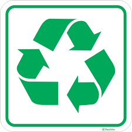

Integrantes do Grupo
Conheça os estudantes que desenvolveram este projeto sobre reciclagem e sustentabilidade.

Maike
Participo do projeto sobre reciclagem e sustentabilidade.


Matheus Victor
Participo do projeto sobre reciclagem e sustentabilidade.
Pequenas atitudes, grandes mudanças.
Veja os materiais que fazem parte do nosso projeto:
📄
Papel
🧴
Plástico
🍶
Vidro
🥫
Metal